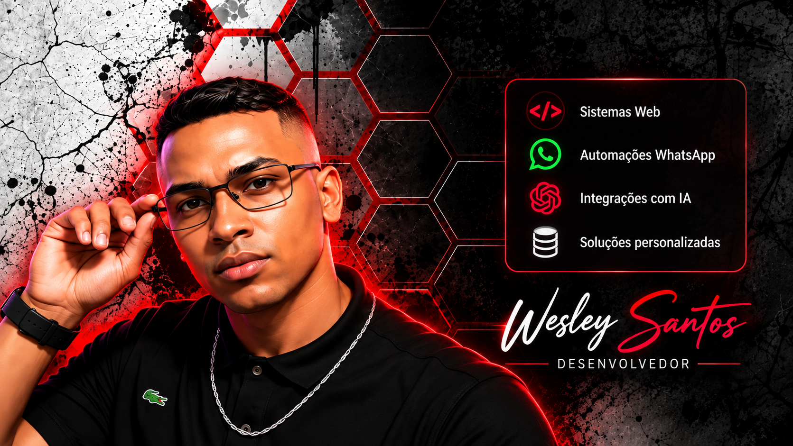
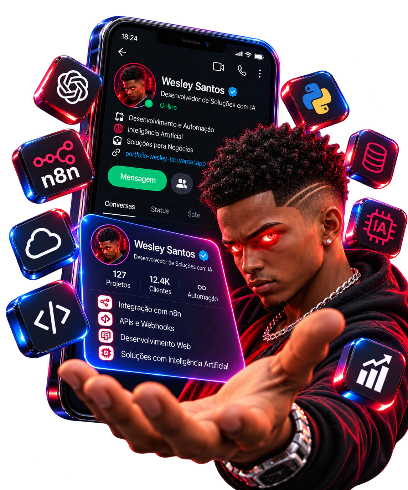

Desenvolvimento WebSites e sistemas
DESENVOLVEDOR & AUTOMAÇÃO COM IA
Transformando ideias em soluções reais com Inteligência Artificial.
Desenvolvo sistemas web, automações e integrações com IA para ajudar negócios a economizar tempo, melhorar o atendimento e gerar resultados reais.

Automação com IAProcessos inteligentes
Integrações de APIsWhatsApp, Webhooks e mais
Soluções PersonalizadasFoco no seu negócio
Projetos
Conheça os projetos e soluções desenvolvidos.
✦ PROJETO PRINCIPAL
Auri IA
Assistente de WhatsApp com Inteligência Artificial
Auri é uma assistente virtual para WhatsApp que atende, entende, responde, envia catálogos, coleta informações, agenda, tira dúvidas e realiza processos de forma automática.
- Atendimento inteligente no WhatsApp
- Envio de catálogos e mídias
- Integração com n8n e APIs
- Coleta de briefing e geração de conteúdo
- Automação de processos do seu negócio

- Fluxos no n8n
- Integração com Evolution API
- Respostas com IA (GPT)
- Envio de catálogos e imagens
- Registro e histórico de conversas
- Personalização para seu negócio
Barber Club
Demonstrativo de LoungePage para Barbearia
Uma página profissional desenvolvida para apresentar a barbearia, valorizar sua identidade e exibir seus serviços em uma experiência digital organizada e responsiva.
- Apresentação dos serviços da barbearia
- Identidade visual profissional
- Layout adaptado para dispositivos móveis

Novo projeto
Espaço reservado para adicionar um próximo projeto ao portfólio.
Em breveNovo projeto
Espaço reservado para adicionar um próximo projeto ao portfólio.
Em breveNovo projeto
Espaço reservado para adicionar um próximo projeto ao portfólio.
Em breveNovo projeto
Espaço reservado para adicionar um próximo projeto ao portfólio.
Em breveSobre mim
Sou Wesley Santos, desenvolvedor com foco em inteligência artificial, automações e soluções web. Gosto de transformar ideias em projetos funcionais, sempre buscando praticidade, eficiência e resultados reais.
◉ Vamos conversar →Habilidades e Ferramentas
 JavaScript
JavaScript TypeScript
TypeScript React
React Next.js
Next.js Node.js
Node.js n8n
n8n Supabase
Supabase APIs
APIs Docker
Docker Git
Git WhatsApp
WhatsApp
OpenAI
Vamos conversar?
Quer falar comigo sobre tecnologia, automação e desenvolvimento?
◉ Chamar no WhatsApp ↗